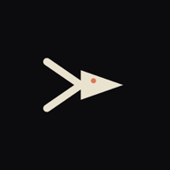
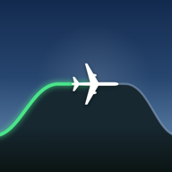

Please update fin
Most testers are still on an older version. The latest is 1.0.2, with fixes and features that came from your feedback.
Update finOpen this on your Android phone and tap Update. If it only says Open, you already have the latest.
Help me launch three more apps.
It takes about a minute. Just do the step for the phone you have.
Android phone
Opt in to Windowseat, Conversa and ZeroTV
Google needs 12 testers opted in to each app for 14 days before it can launch.
Windowseat
A flight tracker for your watch that keeps counting down to landing, even in airplane mode. For Wear OS 3 or newer watches, such as Pixel Watch, Galaxy Watch 4 and later, and OnePlus Watch 2.
It's a watch-only app. It won't install on your phone, but you can still opt in from your phone without a watch, and that's what Google counts.
Opt in to WindowseatHave a Wear OS watch? After opting in, open the Play Store on your watch and search for Windowseat to install it.
Conversa
A converter for currencies, units and quick maths, plus word definitions. Type it the way you'd say it. For any Android phone.
Opt in to ConversaZeroTV
A TV app for the IPTV service you already have: a remote-friendly guide, live sport found across channels, and your phone as the remote. For Android phones, Android TV and Google TV.
Opt-in opens in a few daysOn each page that opens, tap Become a tester, then please stay in the test for 14 days.
iPhone
Conversa is on the App Store
A converter for currencies, units and quick maths, plus word definitions. Type it the way you'd say it. Free, for iPhone on iOS 15.1 or newer.
Get ConversaApple Watch
Windowseat is on the App Store
A flight tracker for your watch that keeps counting down to landing, even in airplane mode. For Apple Watch Series 4 or later, SE and Ultra, on watchOS 10 or newer.
It's a watch-only app. There's no iPhone version. Download it from the App Store on your Apple Watch.
Get WindowseatWhat are these apps?
ZeroTV
Plays the IPTV playlist or TV account you already have, on Android phones and Android TV. No channels included.



Windowseat
A flight tracker for your watch that keeps working in airplane mode: time to landing, what you're flying over, and a logbook of every trip.


Conversa
Type what you mean, like “20 usd in aed” or “5 ft 11 in cm”, and get the answer. Currencies, units and word definitions, even offline.